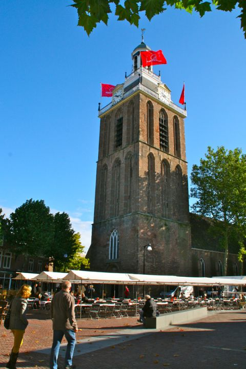

Snelschaken Meppel 2012Hier ziet u in beeld een afschuwelijke vogelpoepstad, waar ik vandaag ging snelschaken. Het is een erg rare stad. Kijk maar eens na de kerk. Is hij niet erg dik? Raar he? ik vond het al een rare stad, en dat is het ook. Ik heb hier gesnelschaakt en het ging erg goed. In de eerste vooronde had ik 4 uit 5 potjes gewonnen. Daarna won ik er 4.5. Ik speelde remise tegen een rare vogel die zo nodig remise wou claimen terwijl dat helemaal niet kan tijdens snelschaken. Het lag aan iemand die zei dat hij de scheidsrechter was en hij zei dat het remise was. De 3de voorronde verloor ik alles.(ik had door dat ik hetzelfde zou winnen in de 2de finalegroep als in de laagste finale groep.) Daarna kwam ik in een finalegroep van ongeveer mijn niveau, ik haalde 7.5 in deze groep en werd met vlag en wimpel eerste. Ik was heel blij, want ik wist dat ik een fles wijn zou winnen. Tijdens de prijsuitrijking kreeg ik alleen maar een eeuwenoudboek, daar was ik niet blij mee dus ging ik naar de barbecue en daar at ik me helemaal rond. Toen was het toernooi klaar, prima toernooi, hier is een video: |